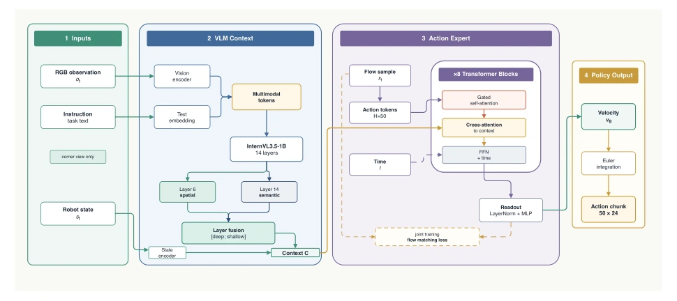
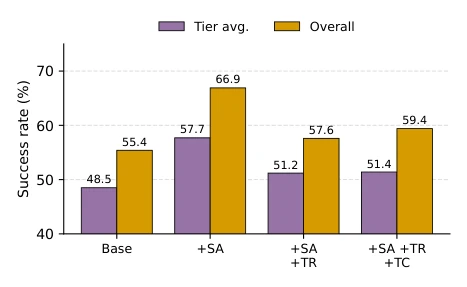
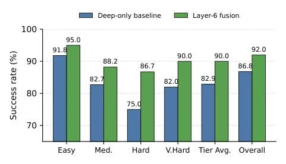

当前 Vision-Language-Action 模型如 RT-2 (Zitkovich et al. 2023) 和 OpenVLA (Kim et al. 2024) 依赖数十亿参数，计算成本高昂，难以满足实时机器人控制需求。现有轻量模型如 TinyVLA (Wen et al. 2025) 虽快但精度不足。FabriVLA 旨在平衡效率与精度，解决大模型落地难的问题。特别是对于需要精细空间定位的操作，大模型往往忽略底层细节。现有工作如 Evo-1 (Lin et al. 2026c) 虽轻量但精度仍有差距。作者希望证明 1B 规模 VLM 无需多阶段训练也能达到强性能，降低部署门槛。
—

Figure 2: Overview of FabriVLA. RGB observations and the task instruction are encoded by an InternVL3.5-1B vision-language backbone (14 retained layers) into fused context tokens. A shallow VLM layer (layer 6) is additionally extracted and fused with the deep features via a learned linear projection to enrich spatial detail. A flow-matching action head composed of a stack of L=8 gated cross-attention blocks denoises an action chunk conditioned on these tokens, the robot state, and the flow timestep. The entire model is trained jointly from a pretrained VLM and randomly initialized action head.
Figure 3: Design space of optional modules in the FabriVLA action head. All three variants share a common base head—action encoder →L=8 cross-attention blocks →LayerNorm →sequence-pooled MLP head →velocity—and each adds a single zero-initialized gated residual module, so at initialization (gate = 0) every variant reduces exactly to the base head; they differ only in where temporal or per-step information is injected. (a) Gated self-attention mixes the 50 action tokens inside every block before cross-attention (the learnable gate g of Section 2). (b) A token residual head adds a per-step linear map R1024 →R24 in parallel with the pooled MLP head. (c) A depthwise temporal convolution (k=3) smooths adjacent steps along the horizon after the block stack. The released FabriVLA enables variant (

Figure 6: Cumulative ablation of the three optional action head modules on Meta-World MT50 (50k steps, frozen VLM, no DeepSpeed FP32 masters). Grouped bars show the tier- average and overall episode-level success rates. Gated self- attention (SA) gives the largest gain on both; further adding the token residual head (TR) and temporal convolution (TC) does not recover it.
Figure 4: Meta-World MT50 success rate versus training step. Colored lines are the four difficulty tiers; the solid black and dashed gray lines are the tier-average and overall episode- level success rates. The 93k checkpoint corresponds to the selected result in Table 1.

Figure 5: Ablation of shallow VLM layer fusion on Meta- World MT50. Compared with the layer 14 only baseline, layer 6 fusion improves tier-average success from 82.9% to 90.0% and overall episode-level success from 86.8% to 92.0%.